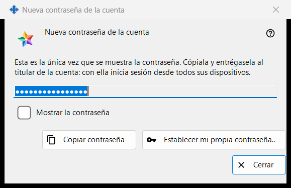
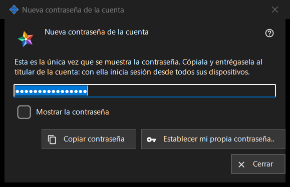

Nueva contraseña de la cuenta
Para qué sirve
Muestra o pide la contraseña de una cuenta del servidor de intercambio, en tres modos: Generada muestra una contraseña que el programa acaba de crear, una sola vez (la imagen); Escrita pide una contraseña propia; Guardada muestra una contraseña almacenada en este PC. Se abre en la configuración del servidor de intercambio local del Share Manager después de «Añadir una cuenta..», «Restablecer contraseña..» o «Establecer contraseña compartida..», y desde las preguntas sobre la contraseña del administrador.


En este orden
- Generada: pulsa «Copiar contraseña» (marca «Mostrar la contraseña» para leerla), entrega la contraseña al titular de la cuenta y pulsa «Cerrar».
- Contraseña propia: pulsa «Establecer mi propia contraseña..» o elige «Escribir yo la contraseña», escribe una contraseña que cumpla la regla y pulsa «Guardar contraseña».
- Guardada: selecciona la cuenta y pulsa «Mostrar contraseña..».
Los elementos
Contraseña generada (en la imagen)
Título de la ventana «Nueva contraseña de la cuenta». El texto de introducción dice: «Esta es la única vez que se muestra la contraseña. Cópiala y entrégasela al titular de la cuenta: con ella inicia sesión desde todos sus dispositivos.» El campo está enmascarado y es de solo lectura; «Mostrar la contraseña» la revela solo en esta ventana. «Copiar contraseña» la pone en el portapapeles por una vía protegida que la mantiene fuera del historial del portapapeles de Windows y del portapapeles en la nube, y responde «La contraseña se ha copiado.». Al cerrar la ventana, el campo se vacía.
Cerrar sin copiar
Si cierras una contraseña generada que no has copiado ni mostrado, el programa pregunta «¿Cerrar sin copiar la contraseña?» y añade que no se puede mostrar de nuevo - después solo se podrá restablecer. La respuesta predeterminada es «No». Cuando la contraseña se guarda en este PC, no se hace ninguna pregunta.
Establecer mi propia contraseña..
Se usa desde la ventana de la cuenta: cierra esta ventana sin usar la contraseña generada y vuelve a abrir el restablecimiento, ahora con una contraseña que escribes tú.
Contraseña escrita
Título «Contraseña de la cuenta», etiqueta «Contraseña:», un campo enmascarado y «Mostrar la contraseña». Sugerencia: «Al menos 10 caracteres, con una letra latina mayúscula, una minúscula y un dígito.» Mientras escribes, una línea de aviso indica lo que falta, por ejemplo «Se necesita al menos un dígito.». «Guardar contraseña» rechaza una contraseña que no cumple la regla; una que la cumple vuelve a la ventana que la pidió, y la última palabra sigue siendo del servidor.
Contraseña guardada
El título añade el inicio de sesión a «Contraseña de la cuenta». La ventana muestra la contraseña almacenada en este PC, de solo lectura, con «Mostrar la contraseña» y «Copiar contraseña»; al cerrar no se pregunta nada. Se abre con «Mostrar contraseña..» en la lista de cuentas, que solo aparece mientras el interruptor «Guardar las contraseñas de las cuentas en este PC» está activado. El interruptor está desactivado de forma predeterminada; al activarlo se pregunta primero, y la contraseña se guarda después cifrada para tu cuenta de Windows, legible por cualquier programa que se ejecute con ella. Una contraseña establecida antes de activar el interruptor no se guarda.
Ajustes del gestor · Ajustes de uso compartido SFTP · Ajustes del servidor de intercambio